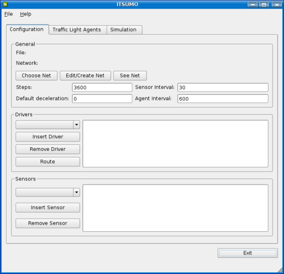
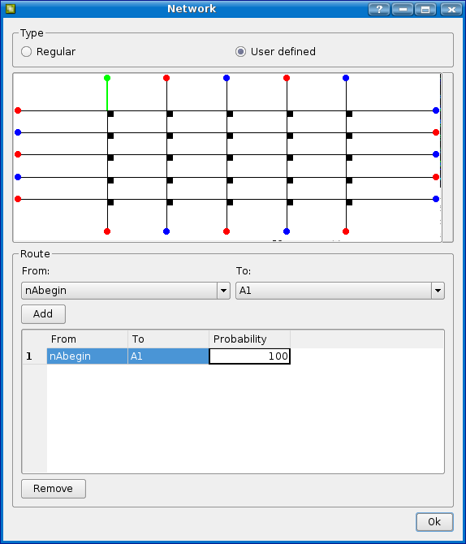
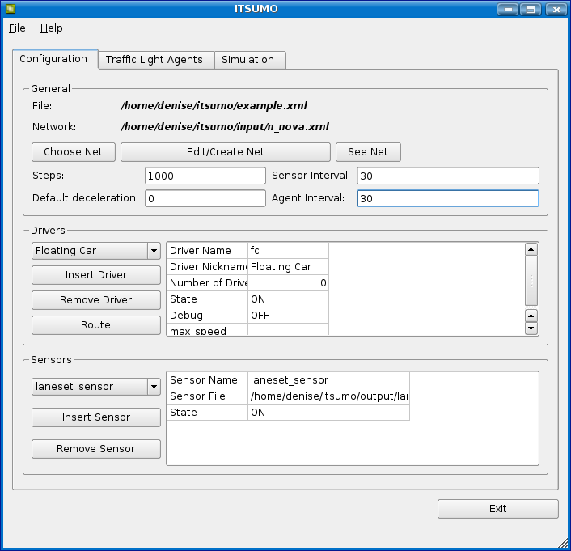
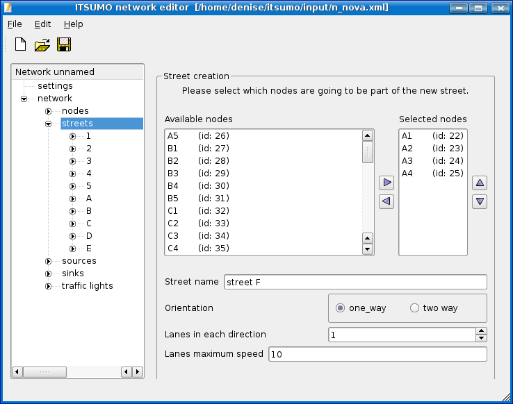
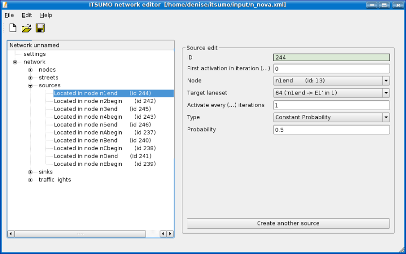
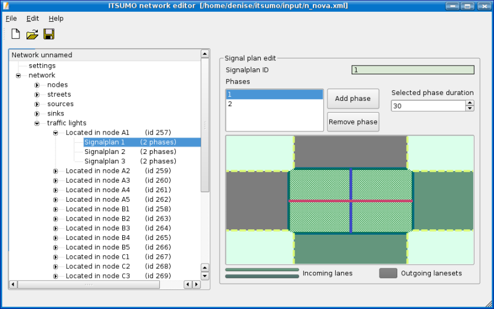

The available ITSUMO version considers the use of Linux. For
the installation, the following packages are needed:
- Using any Linux distribution:
- PyQ (in some
PyQT distributions, its called kdebindings3-python or
python-qt3)
- python-xml (PyXML on Fedora Core 5)
- Using SUSE:
- Using Ubuntu 64 bits:
- libqt3-compat-headers
- libglpng
- libglpng-dev
- Using Fedora Core 5:
- libXt
- libXt-devel
- libjpeg
- libjpeg-devel
- libmng
- libmng-devel
After having all the packages installed:
1 - decompress the given zip file;
2 - open a text terminal, go to the '$itsumo_root$/src' directory and
type 'make';
Organization:
* the source files are in the '$itsumo_root$/src/' folder
* the documentation is the directory '$itsumo_root$/docs/' folder
* the input simulator files (configuration files, topology files, etc.)
are in the '$itsumo_root$/input/' folder
To run the simulator interface, that has all operations needed by a
regular user go to the simulator root folder and type './witsumo'; this
command will bring up the interface.
For problems on the installation or on the simulator use, see
Solving problems.
(Back
to the Top)
The interface is initialized by typing './witsumo' in the itsumo root
folder. Tho run a simulation, 2 or 3 configuration files are needed:
1 - topology: xml file with the topology definitions;
2 - configuration: xml file with the
configurations
to run a simulation (eg. number of time steps, topology to be used, etc.;
3 - agents: defines the mapping of traffic light agents for TL control
(optional!).
In the main interface, there are 2 menus on the top:
1 - File: for opening and saving the configuration file.
2 - Help: its possible to open the itsumo html documentation files.
There are also 3 tabs in the interface:
1 - Configuration: here is defined the configuration, like
number
of steps in the simulation, sensors, etc. The explanation about each
item is in this documentation.
2 - Agents Definition: here its defined the mapping of agents and
traffic-lights, when necessary.
3 - Simulation: here are the option to run the simulation 'Run
Simulation', with the configuration defined in the previous tabs and
the Visualization that opens a 3D window. Once the 3D window opens, its
necessary to type 's' to start the simulation.
To start a simulation an its visualization, its necessary o define the
simulation parameters.
General Configuration
This is done in the Configuration tab. When opening the program
(./witsumo), will open a window like in the Figure below:

- Click in 'Create New Net' (see here)
to create a new topology or click in 'Choose Net'
and look
for a previously generated configuration file. To visualize the
selected topology, click 'See Net'.
- In Steps, type how much time steps you want in your
simulation and type also the
Default Deceleration of the vehicles.
- In the Drivers panel, it is possible to insert special
drivers:
- Click Insert Driver.
- Select the desired driver type and click 'OK'
- There are some pre-designed
drivers:
- FC (Floating Car) model:
This driver model has a movement pre-defined by the user.
To define the drivers route:
- Click 'Routes', when the FC model is selected,
a window showing a general view of the network as a graph will be
opened. In this window, the source nodes are blue and the sink nodes
are red.
- Below the map, in this window, make a selection
of the origin node (From) and end node (To) and click 'Add',
note that the visualization will chance the selected route color to
green.
- In the route table, the probabilities of
following each path can be modified.
- Repeat the operation until all the route is
inserted.

- IRC (Iterated Route Choice) model:
In this model, the driver learns to interact with the scenario and to
choose between two different pre-defined routes, using a heuristics
method based on the travel time in the routes during the last 'n'
interactions . The scenario is composed by a entrance laneset
and two routes (route 0, with higher traffic capacity and route 1 with
lower capacity) that meet again in the destiny laneset on the net. For
more information on this model see [KLUEGL, F., BAZZAN, A. L.
C. Route Decision Behaviour in a Commuting Scenario: Simple
Heuristics Adaptation and Effect of Traffic Forecast. In The
Journal of Artificial Societies and Social Simulation, 2004].
The drivers parameters are:
- max_speed: maximum drivers speed.
- source_laneset: starting laneset.
- sink_laneset: convergence laneset
- route0_begin: first laneset of route 0.
- route1_begin: last laneset of route 1.
- init_heuristic: initial heuristics value.
- learn_prob: learning probability.
- hist_size: size of the drivers learning
history (how many values are saved to reevaluate the
heuristics).
- Braess model:
This model is adapted to the Braess paradox. For more information, see
[BAZZAN, A. L. C., BOFFO,
F., KLUEGL, F. Avoiding the Braess Paradox with Information
Manipulation In: Proc. of the Workshop Agents in Traffic and
Transportation, 2004, New York].
- Click on 'State' and select ON to activate this kind of
driver.
- Type the drivers maximum speed field (max speed).
- The sensors are inserted in the 'Sensors' panel. These
sensors are used to collect and register data durign the simulation
saved on files indicated by "Sensor File", these are the sensor types:
- lane sensor: map of the
cells and occupation (vehicles), density and average speed on the lane
- laneset sensor: density of
lanesets that are connected to a node controlled by a traffic light
- section in columns sensor:
density and average speed for sections
- section in columns sensor printing names:
density and average speed for sections, and name of the sections
- visualization of section densities:
densities of the sections, to be used as a input for the visualization
module
- visualization of section relative
densities:
relative densities of each section (for instance, when is a traffic
light the maximum density so 1, otherwise is 1/maximum speed), to be
used as input to the visualization module
- visualization of stopped cars in section:
relative number of stopped vehicles in the section (#stopped
vehicles/#cells), to be used as input to the visualization module
- stopped cars in laneset:
gives the total number of vehicles and stopped vehicles on the lanesets
- total stopped cars in network:
gives the total number of stopped vehicles on the network
- Click on 'Insert Sensor', select the sensor and click OK
- As the Drivers, select ON in the State field to
activate the sensor.

- Save the configuration file on the menu File->Save.
(Back
to the Top)
To create a new topology, click on the "Create New Net" button, in the
'Configuration' tab. This will open the network editor.
To create a new net, go to File->New, a new network file will be
created with the name empty.xml. The network name can be modified on
saving the network. The network creation must start by the nodes
creation, they will enable the streets, sinks, sources and traffic
lights creation.
- Click in
Nodes.
- Click in “Create another
node”.
- Choose a name for the node (Node name) and type
the coordinates of the node (X coordinate, and Y coordinate). The
coordinates must follow the system shown in the Section Nodes
- Repeat the previous steps until all the nodes have been
created
To create a street, the nodes belonging to this street must be selected,
remembering that sinks and sources MUST be enclosed in the street
definition
- Click in “streets”.
- On "streets creation", select a node and click in the
insertion button, the insertion order is EXTREMELY IMPORTANT,
so, for a street with the nodes n1,n2,n3 they must be inserted in this
order.
- Repeats the operation until all the street
nodes are
inserted.
- In “street name” inform the name of the
street
- In “orientation, select
“one_way” for streets with one traffic direction ,
or “two_way” for streets of two traffic
direction.
- In “lanes in each direction” type how
many lanes have the street, if the street has different number of lanes
in different section, this value indicates the maximum number of lanes
that this street can have
- In the last field, select the maximum speed for
this street.

Editing the Streets
Adding and removing sections
- To add sections in a street, go to network->streets,
and select
the street.
- Click with the right button of mouse in the street and
select “Add new
section”.
- Edit the configurations of the new section in the panel
“Section edit”, that it will appear in the right
side of the screen. To delete one
section, repeat step 1, then click with the right button of mouse in
the section to be excluded and select “Delete this
section”.
Adding and removing lanesets
and lanes
The edition is similar to the streets editing, go to
network->streets, and select the section to be edited,
insertions and exclusions are made on the same way as the sections
editing.
Turning
Probabilities
Here are edited the probabilities of vehicle to move to take each
direction in a node. This is decided in the section from
where the vehicles are reaching the node. Go to
“network”, click in streets, select the street that
has the section, and finally, selects section. In the right part of the
screen it will appear a panel as in the figure below, showing sections
destination, and the possibility of an car to go for each one of them.
You can edit the values of the field “Probability”,
but the addition of the probabilities must be 100 (in case that is note
possible, use 99,9).
Sinks e sources are nodes that can add or remove vehicles in the
scenario, so they must be created in preexistent nodes. A node can be a
sink and a source at the same time.
Creating a source:
- In “network”, click
source.
- In the right side of the screen, click in “Create
source”, new fields will appear in the
screen.
- The field “First activation at interaction (...)"
indicates from which iteration this sink will start to
run.
- In “node”, select the node
where source will be
created.
- In “target laneset”, select the laneset
for where the source will create
vehicles.
- In “Activate every (.) interactions”,
type the activation period for this source
- In “Type”, select in witch way
vehicles will be inserted, there are 4 ways
of insertion:
- Constant Probability: It inserts vehicles with constant
probability (Vehicles Insertion
Rate)
- Variable Probability: inserts vehicles with
a variable probability
- Constant Flow: inserts a fixed number of
vehicles in each activation time
- Variable Flow: inserts one fixed number of
vehicles in each specified time
- Constant Probability: inserts vehicles with a constant
probability

Creating a sink:
- In 'network', click sink.
- Click "Create a sink", new fields will appear
- In "First activation at iteration (..):
indicates from which iteration this sink will start to
run.
- In "Removal probability", select the probability (from 0
to
1) that this sink will remove a vehicle.
- In "Node", select the node witch it will be located
- In "Source laneset" select from witch laneset this sink
will remove vehicles
Creating the traffic lights:
- In "network", click "traffic lights".
- Choose a node where the traffic light will be
located and click "create traffic light".
- Now a image of the node where the traffic light is
located will appear and a panel "signal plan
edit".
Creating new signal plans:
The creation of a new signal plan must be done on every traffic light,
go to "network" and click "traffic lights", then click with
the right button on the traffic light to be edited and "Add
new signalplan", remember that this operation must be done for every
traffic light.
Editing the plan
In this panel the phases will be created, each traffic light must have
at least one phase:
- Click "Add phase".
- Set the phase time duration in "Selected
phase duration".
- Now
set the allowed movements during this phase, this movements starts on
the "incoming lanes" and go to "outgoing lanes". To do this, click on
the incoming lane and release the mouse on the target laneset. A
colored line will be created showing that this movement is possible,
see Figure below.
Now repeat this operation until all movements on this phase have been
set. Remember that each LANE, from the origin laneset, must be
connected
to a destiny laneset, if the movement is possible.
* After the plans edition, the Turning Probabilities must be checked to be consistent with the allowed movements.

(Back
to the Top)
The configuration of the traffic light agents can be done in the 'Agent Definition' tab.
(Back
to the Top)
In the 'Simulation' tab it is possible to execute a simulation and to initiate a 3D visualization of the results.
To run a simulation, click 'Run'. The simulation will consider the
previously defined parameters and the results will be saved on the
sensor log files, configured on the "Configuration' tab. If a
visualization log was set, to see the results, click 'Visualize!'. This
command will open a window were you can choose the log to visualize.
After this, a window will open and the following commands are possible:
- 's': starts the visualization, typing more times makes the visualization run faster
- 'q': quit this window
- holding left button on the mouse and moving:
- up: zoom in
- down: zoom out
- left: move map to the left
- right: move map to the right
(Back
to the Top)
With the intention of facilitating the development of traffic
controllers, the basic classes for creation of traffic light
agents to simulator ITSUMO have been implemented. These agents are
organized in a data structure separated from the simulator, therefore,
the user does not need to manipulate the simulator code. This
makes the independence of this module possible.
Between the agents and the simulator, a communication is established
using sockets, where is possible to receive all the necessary
information for the processing of the control agents, and
send requests for changes in the simulator configuration. The agents
must interpret the information received, to infer its control and to
return to the simulator its control action, applied on one or more
traffic lights in the network.
Each agent is executed here in one thread independent. The
communication between agents and the simulator is established at the
door 30000, by blocking TCP, and accepts a maximum of 50 connections
(the number of connections, as well as the characteristics of it, can
be configured in the classes of Sockets, in the folder
“src/socket/”).
This document describes the implementation that is being provided with
the simulator, using the C++ programming language, as well as the
definition of the necessary structure so that any another
implementation (another language) can be implemented following the
same standard.
(Back to the Top)
The source code is located in the '/src/trafficAgents/' folder, where:
- common.{hh,cc}: definition of the common structures needed to the interpretation of the network and control
- local_agent.{hh,cc}: defines a local agent that controls a
specific number of traffic lights (1 or more) and in this object is
located the socket communication structure with the simulator
- tlagent.{hh,cc}: defines a traffic light controller. This object
refers to just one traffic light and has the structure of the
traffic light and node controlled. A local_agent can instantiate 'n'
tlagents.
- main.c: main file where the configuration file is read and the agent objects are instantiated, beginning the control process.
- agents.xml: configuration file of the traffic lights module, created by the interface.
Ex.:
<agents>
<agent> <name>Agent_1</name>
<stat>on</stat>
<trafficlights>
<trafficlight>257</trafficlight>
<trafficlight>259</trafficlight>
</trafficlights>
</agent>
<agents>
(Back to the Top)
The messages exchanged between agents and simulator are strings with
concatenated variables separated by “; ”.
To create a connection, the agent must send an order of connection to
the simulator, consisting of one string initiated by “; ”,
followed for ids of the traffic lights that it desires to control
(remember the rule of composition of messages cited in the first
paragraph). When the connection is set with the simulator the agent
receives a structure from data contends the information of the traffic
lights that this intends to control. These information are stored in
the TLAgent class. This message is one string with the fields below:
numberOfTrafficLights
[trafficLightId;
numberOfSignalPlans;
[signalPlanId;
numberOfPhases;
[phaseId;
phaseStartIter;
phaseEndIter;
numberOfOpenDirections;
[fromLane;
toLane;]]]]
In the simulation definiftion there are 2 parameters to be defined:
a) sensor interval: defines the interval in which the state of the network will be informed to the agents.
At each sensor interval, the simulator sends to each connected agent a
message with the state of the net for its controlled nodes. These
fields are interpreted and converted into an object
“simulationState”, then it is stored in one list
inside of the TLAgent object. This message is initiated by string
“i; ” that identifies a message of this type.
currentIteration;
numberOfNodes;
[nodeId; trafficLightId; currentPlan;
totalNumberOfIncomingLanes;
[laneId;
laneDensity; laneAvgSpeed; laneCarsStopped]]
That is: the current iteration, one list of the nodes and a list of
lanes of entrance for the node in question. In the agent, this message
is processed by the function “pcsInfoMsg”, in the
LocalAgent class.
The agent, after receive this message, must send a message of receiving
confirmation to the simulator. Currently it does not have verification
of the content of this reply, and therefore reply “OK" is
implemented. This reply, future it can serve as another way of
exchanging information.
b) agent interval: defines the interval in which an action of control will be requested to the agents.
At each agent interval, is sent a request of control to each agent and
this processes a return message with ids of the traffic lights that
must have control changes and the characteristics of the new signal
plan to be executed (in case is desirer to modify the current control).
This message of control request, sent by the simulator is composed for
string “r; ”, that is, it has one “request” for
the agents. The format of the message of reply of the agents
must follow this scheme:
trafficLightId;
[signalPlanId;
numberOfPhases;
[phaseId;
phaseStartIter;
phaseEndIter;]]
At the beginning of the itsumo execution, a wait time is given so that
the agents connections are registered.
The control must be programmed by the user in the above described
classes and be compiled. The control must be implemented in the
object “TLAgent”, more specifically in the function
“newControlState ()”.
Protocol summary:
Communication protocol between agent <-> simulator:
- The simulator starts to run and waits for 10 seconds for connection requests;
- The agents connect to the simulator, sending the request suing socket. The request is a string of the type:
"a;id1;id2;", where "a" is the id of this type of message ( a =
connection request) and "id1", "id2", etc are the ids of the traffic
lights to be controlled.
- When the itsumo receives the connection request, confirms this
connection by sending a message with information about the traffic
lights to be controlled. This message is a string in the following format:
- c;numberOfTrafficLights; [trafficLightId; numberOfSignalPlans;
[signalPlanId; numberOfPhases; [phaseId; phaseStartIter;
phaseEndIter; numberOfOpenDirections; [fromLane; toLaneset;]]]]
- An example: the agent requested to control traffic lights 6 and
9, both have signal plan id 55 and just one phase with id 77 that
starts on iteration 0 and stops at iteration 69 (in the cycle).
For this case, assuming any value for lanes and lanesets, the received
string must be like:
- "c;2;6;1;55;1;77;0;59;1;x0;x1;9;1;55;1;77;0;59;1;y0;y1;"
- This message, received by the agent, is used for the control
(because it contains the information about the traffic lights to be
controlled)
- With the steps 2 and 3 a basic operation is established
- At each 'sensor interval', the simulator sends to each agent a
message informing the states of the controlled nodes to each agent
(*just the nodes controlled by the agent, not the whole network*).
- This message is a string, in this format:
- i;currentIteration; numberOfNodes; [nodeId; trafficLightId;
currentPlan; totalNumberOfIncomingLanes; [laneId; laneDensity;
laneAvgSpeed; laneCarsStopped]]
- An example, using the case on item 3, would be: i;100;2;5;6;1;1;21;0;0;0;8;9;1;1;21;0;0;0;"
- If the creation of this messages will be done using other
source code (for instance, other programming language), the implemented
functions can be followed as a model.
- The agent replies a information message (described on item 5) with a confirmation string "OK.".
- At each 'agent interval' the simulator requests an act from the agents. This request is a string of type "r;".
- When the agents receives the request message (item 7), the agent
processes its data and must reply with a message with the
desired changes. This message is described below:
- x;numberOfTrafficLights; [trafficLightId; [signalPlanId;
numberOfPhases; [phaseId; phaseStartIter; phaseEndIter;]]]
- Example, using the case of item 3, traffic light 6 will change the phase 77: "x;6;55;1;77;0;39;"
- In the case the agent wanted only to change the current plan to plan 55, the message would be "x;6;55;"
(Back to the Top)
A driver model must define a drivers behavior, in the scope of
simulation, concerning the questions typically found in traffic,
as route choice , speed choice, lane change, etc. The process of
modeling drivers is a task of great importance to the significance
of the results of the simulation. The drivers behavior
planning starts to be critical to the correct evaluation of
the network or a traffic situation, so, any simulation result
must be related to the specific driver model used. There are no
definitive models of the human reasoning functions, that makes the
modeling task more complex, when the objective is to reach more
realistic results to apply in real life decisions.
To implement the drivers modules directly in the simulator source,
using the programming language C++, consists on the most flexible
for the determination of the drivers behavior in the simulator,
independently of the paradigm to be used. This demands that the
user knows and has a certain experience with the language and
programming environments for the language in question. Also, it
must be remembered that the programmer must know the structure of data
and the implementation of the simulator, in order to advantage of
these to describe the driver.
Error type:
- Installing
- Error: "qmake: Command not found"
- Solution: Check if the binary 'qmake' is in the qt 'bin'
folder. In case its is not there, qt is not installed correctly, try to
reinstall qt. Otherwise, there is a linking problem, possible to solve
making a symbolic link from 'qmake' in the '/usr/bin/' folder. To
do this: "ln -s <qmake_path> /usr/bin/qmake".
- Visualization.
- Error: "freeglut ERROR: Function
<glutcreatewindow> called
without first calling 'glutInit'."
- Solution: This error is seen in some freeglut library
versions (particularly version 2.4). To solve, its necessary a
downgrade to version 2.2-83 f this library.
(Back
to the Top)